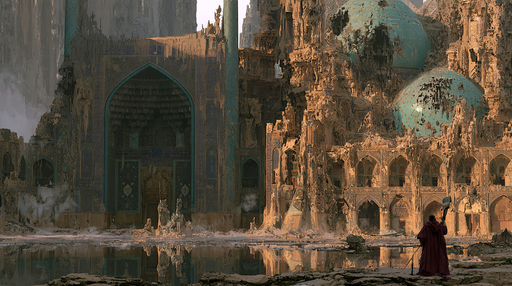
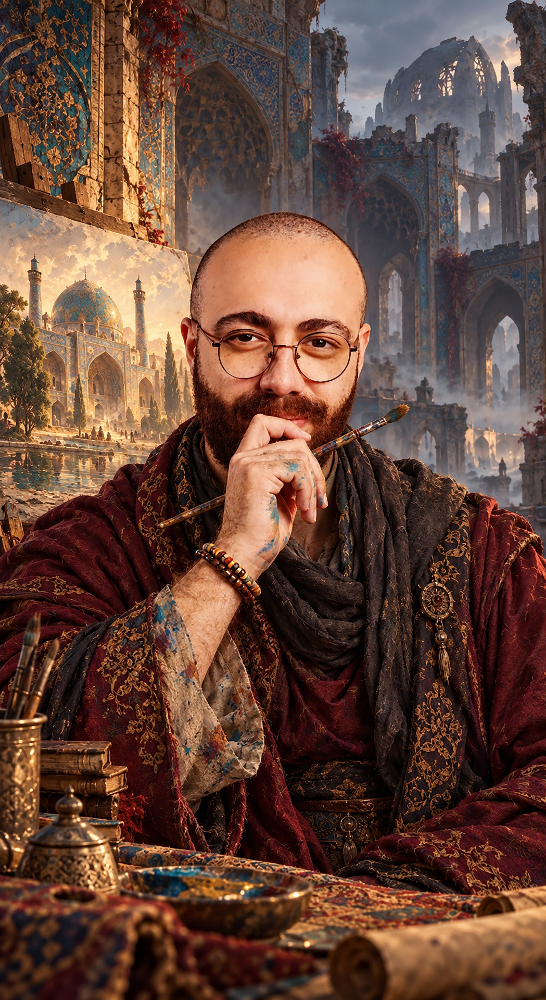
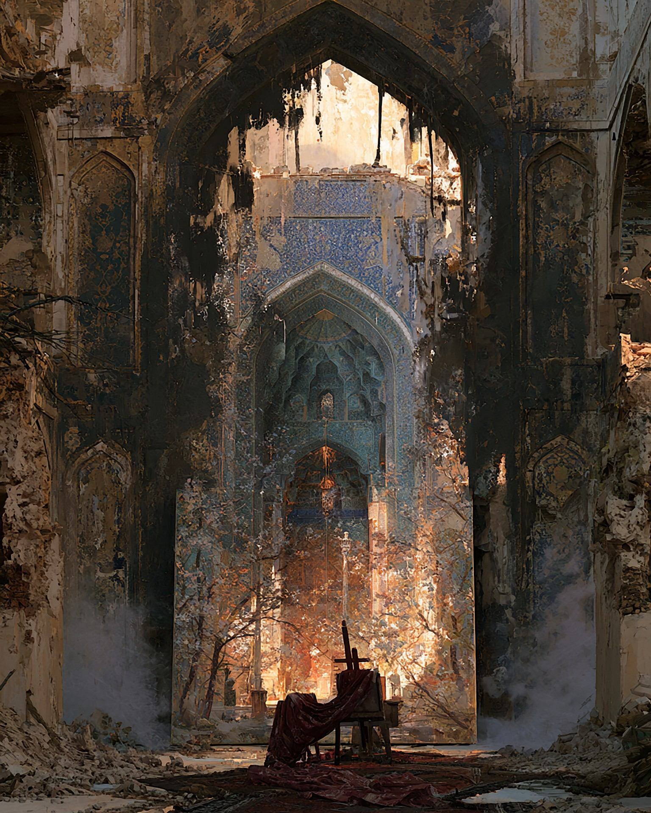
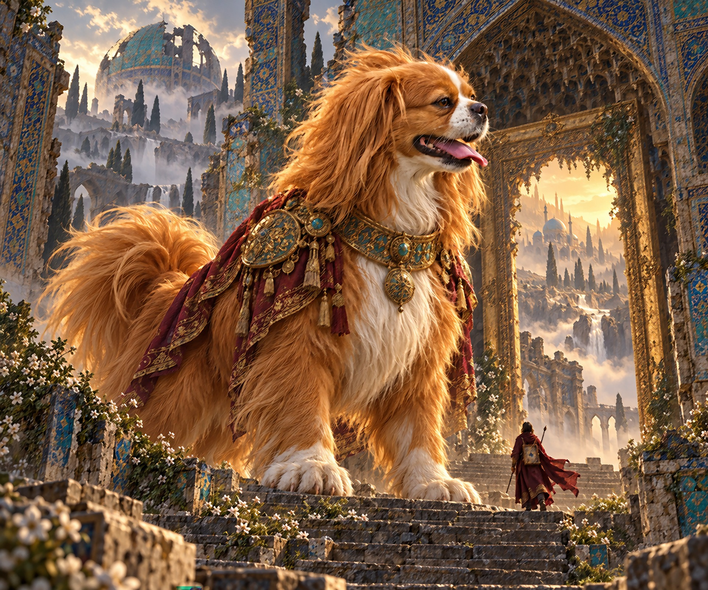
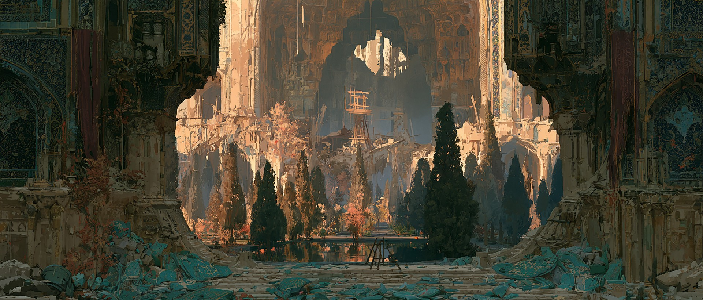

An unofficial record of an unlikely legend
The Painter of
Forgotten Worlds.
Some people paint what they remember.
I paint what the world has forgotten.
Isfahan, somewhere beyond memory.

01 / Meet the painter
An artist.
A wanderer.
An unreliable mapmaker.
My name is Erfan. I am a painter, a maker of strange creatures, and an occasional visitor to places that should not exist.
In the ordinary world, I am an artist from Isfahan living in Toronto. In this one, I restore forgotten worlds with a brush, a little courage, and a deeply unreasonable amount of attention to detail.
If the internet remembers anything about me, let it be this: even a ruined world deserves another colour.
Class Painter / Worldwalker
Companion Leo, Keeper of the Way Home
Current quest Recover the First Canvas

02 / Origin story
The first door
was painted.
It began in an abandoned courtyard in Isfahan. Beneath a cracked turquoise dome, I found a canvas showing the palace as it had once been: bright tiles, running water, and cypress trees bending in the wind.
I added one small brushstroke. The painted water moved.
When I touched the canvas, I stepped through it. Beyond the frame, forgotten places were still alive. Since then, I have travelled from painting to painting, searching for the first world I ever created.
There is a price. Every time I bring something to life, a memory of my own fades. I keep a sketchbook so I can remember who I am. Leo remembers the way home.
Read the classified record
03 / Skills and abilities
Tools for an
impossible journey.
Canvas Walking
I can cross into a painted world, provided the paint is dry. I learned that last part the difficult way.
Creature Making
I design imaginary creatures and give them a place to live. Some become guides. Others eat the furniture.
Reading the Ruins
I find stories in broken tiles, old books, and abandoned buildings, then turn their fragments into new worlds.
Beyond the fiction, my worlds grow from painting, games, and Persian architecture. Explore the Persian painting from Isfahan in the Met collection.
04 / My faithful companion
Leo.
Guardian of the Way Home.
In the ordinary world, Leo is my small dog. Beyond the canvas, he becomes a guardian taller than the palace gates, with copper-gold fur and a heart that has never forgotten me.
When painting takes another memory, Leo still knows who I am. He waits beside the doorway until I am ready, then leads me home. His size may change between worlds. His loyalty never does.
Known weakness: treats. Still treats.

